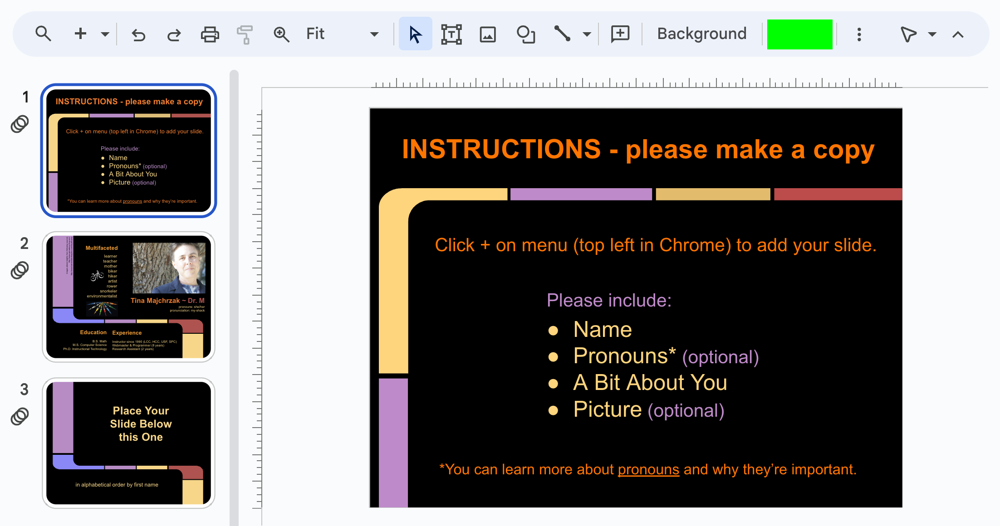
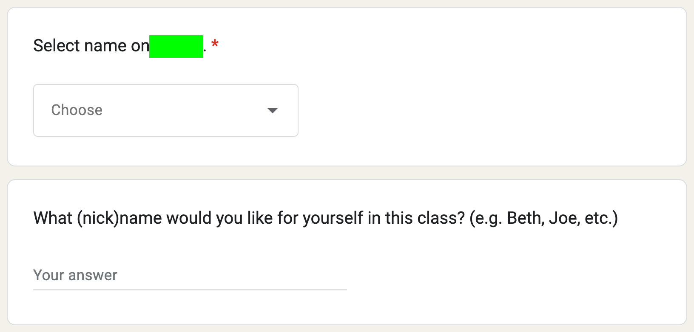
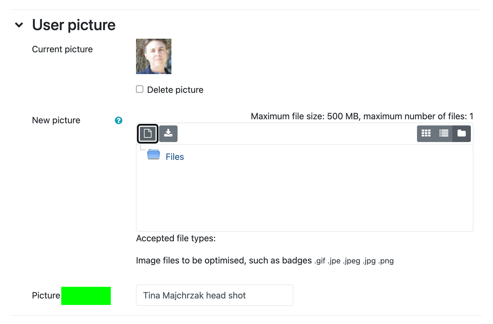
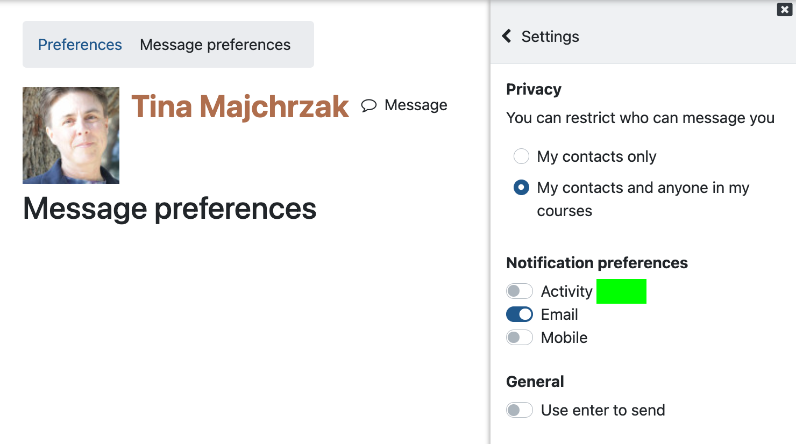
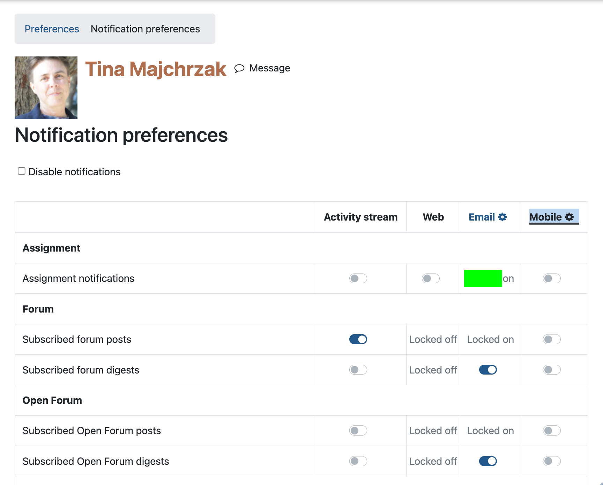
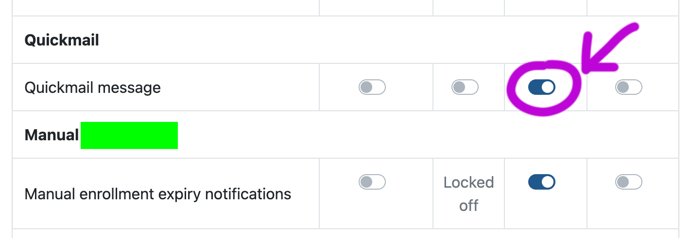
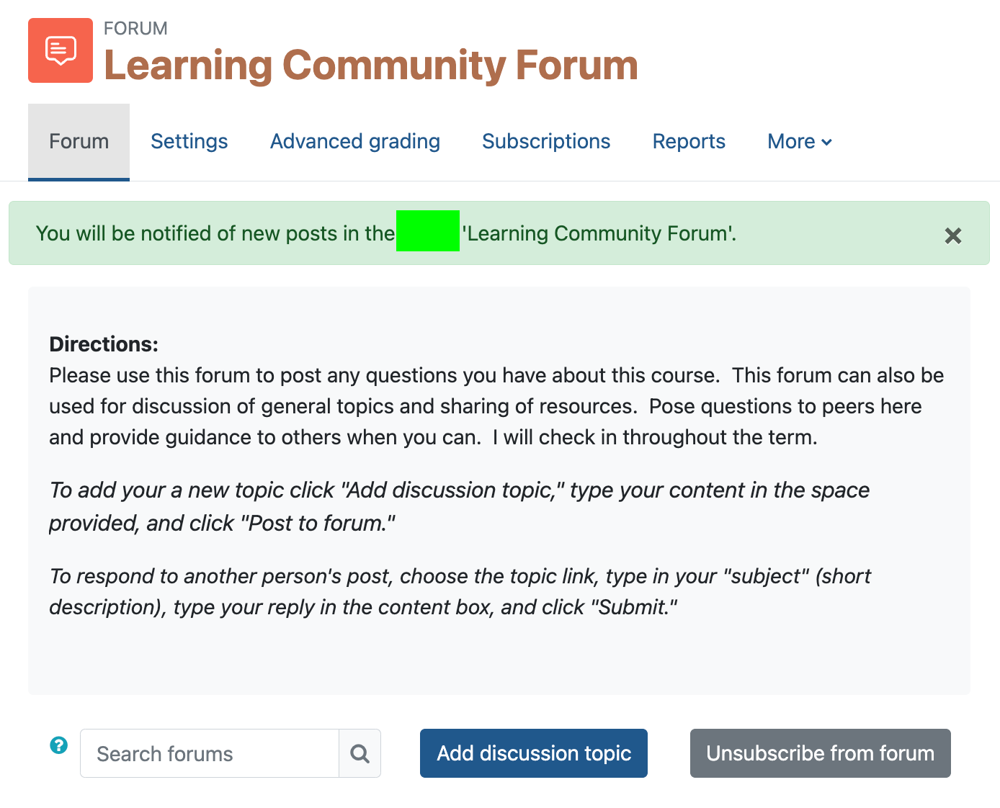
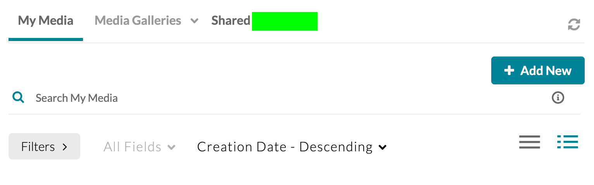
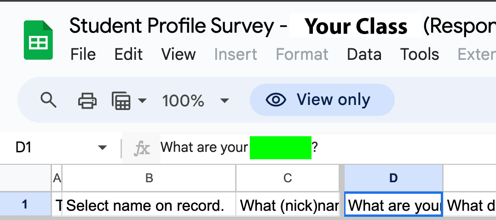

Orientation
Please complete these tasks during the first week of the term to remain in the class and not get dropped. You'll find links to the Who We Are slides, the Who We Are forum, the Student Profile Survey, and the Learning Community Forum in the Course Resources section.
For each topic we explore, you'll complete challenges and find flags which will earn you class points when you enter them into the corresponding submission form. If you like, you also may register your progress and have your name appear on the leaderboard for a given CTF. Spell your name the same each time, and use the same capitalization. As you capture flags and verify they're correct, keep track of them, so you can enter them into the corresponding Canvas submission form and earn class points toward your grade. Only flags entered in the Canvas submission forms give you credit toward your grade. Here's a video showing how to do two of the challenges.
Orientation CTF
Entering Your First Flag
Click the Orientation CTF link above to open the leaderboard for this week's challenges in a new browser window.
Flag ORFirst (5 pts)
Check that the ORFirst challenge is selected. Enter your name, if you want to track your progress and to have it appear on the leaderboard. Otherwise, leave name blank, if you just want to check that the flag is correct. For this flag, enter the word first, then click the Submit button. Make a note that the flag is first for the ORFirst challenge, and enter this flag into the Orientation Canvas submission form for points toward your grade.
Entering Flags to Earn Class Points
Entering flags to get on the leaderboard does not earn you class points, just prestige. To actually earn points for the class, you need to enter the flags you find into the corresponding Canvas submission form (referred to as M-CTFs in the video). Watch the video below to see how.
Check Parts of Multi Part Question
Some flags will ask you to answer several questions and to put pipe symbols | between the answers. You can check individual parts in the CTF. Watch the video below to see how.
Who We Are
Add a slide to the Google Who We Are slide deck for the class. You'll find the link to Who We Are in the Course Resources section on the Canvas home page for this course. After you click the link, you can click the + symbol to add a new slide. Please be sure to make a new blank slide. Don't alter a slide which already exists. The first slide has some directions. The second slide is mine and shows an example of how you might create yours. If you change your background and your change affects all the other slides as well, please click undo (the backward pointing arrow to the right of the + symbol). It is possible to only change the background for your slide. After you've created your slide, please move it, so it's in alphabetical order by first name with respect to the other slides, but leave the first three slides in place.
Flag ORWho (5 pts)
After you're done adding your slide, enter the flag (the word under the green box) into the Orientation Canvas submission form. If you opt to enter it on the leaderboard as well, be sure to set the challenge to ORWho. Make a note of the flag, in case you need to enter it into Canvas again in the future.

Take Student Profile Survey
You'll find the link to the Student Profile Survey in the Course Resources section on the Canvas home page for this course.
Flag ORSurv (5 pts)
After you've taken the survey, make a note of the flag under the green box.

Read Canvas Message
I sent you a Canvas message on the first day of class with a flag in it. If you added the class recently, you might not have received the message yet. Some students are finding it has been automatically forwarded to their email by Canvas. If you can't find it, let me know. I'm happy to send it again!
Flag ORMsg (5 pts)
Locate the message in Canvas to get the flag and make a note of it.
Set Canvas Profile Picture
You can set your profile picture in Canvas. Click your initials* in the top right corner, then choose Profile. Click the Edit profile link. Scroll down to User picture and add a new picture.
* If you've already set up a profile picture, you'll see your picture rather than initials.
Flag ORPic (5 pts)
After you've updated your Canvas profile picture, make a note of the flag under the green box.

Set Message Preference
You can set your message preference in Canvas to include email so you can get course updates emailed to you. Click your face in the top right corner, then choose Preferences. Click the Message preferences link, and confirm Email is on under Notification preferences.
Flag ORMsgPref (5 pts)
After you've updated your message preferences, make a note of the flag under the green box.

Set Notification Preference
You can set your notification preferences in Canvas. For example, you can choose to get grade alerts. Click your face in the top right corner, then choose Preferences. Click the Notification preferences link.
Flag ORNotifyPref (5 pts)
After you've updated your notification preferences, make a note of the flag under the green box.

Forward Quickmail
In notifications preferences, scroll down to the settings for Quickmail message and confirm the email toggle is on so messages I send you in Canvas get forwarded to your email.
Flag ORQMail (5 pts)
After you've confirmed the email in on, make a note of the flag under the green box.

The flag is under the green box.
Subscribe to Learning Community Forum
You can subscribe to a class forum, so you receive notifications for new posts. Under the Course Resources section on the home page for this course in Canvas, click Learning Community Forum, then click the Subscribe to forum button.
Flag ORLearnCom (5 pts)
After you've subscribed to the forum, make a note of the flag under the green box.

Add Recording to Who We Are Forum
NOTE: If you don't have a webcam on your computer, try using your phone.
Under the Course Resources section on the home page for this course in Canvas, click the Who We Are forum, then click the Add discussion topic button. Put your nickname (what you'd like to be called) as the Subject. Click in the message box, then click the Embed Kaltura Media icon to make a recording. In the dialog box which pops up, click the + Add New button, choose Express Capture, allow access to your microphone and camera, then click the red circle to record your video. Click the red circle with the white square to stop recording. Click the white triangle to review your video. You can click the Record Again button if you'd like to record it again. If you're ready to post it, click the Use This button, then click the </> Save and Embed button in the top right corner of the dialog box. After you return the the forum, click the Post to forum button.
icon to make a recording. In the dialog box which pops up, click the + Add New button, choose Express Capture, allow access to your microphone and camera, then click the red circle to record your video. Click the red circle with the white square to stop recording. Click the white triangle to review your video. You can click the Record Again button if you'd like to record it again. If you're ready to post it, click the Use This button, then click the </> Save and Embed button in the top right corner of the dialog box. After you return the the forum, click the Post to forum button.
Please say one of the following, filling in the blanks.
My name is _____. Something unique/interesting about me is _____.
My name is _____. My super power is _____.
For example, I might say the following.
My name is Tina. My super power is debugging.
Flag ORAddVid (5 pts)
Make a note of the flag under the green box in the dialog box which pops up when you click the Embed Kaltura Mediaicon.

Review Student Profile Survey Results
You'll find a link to the Student Profile Survey results in the Course Resources section on the Canvas home page for this course. Click the Results link to open the Google sheet. Review the results and identify 2-4 students who might make good study group partners (same work days, times, communication preferences, etc.). Reach out to them (or respond to them) via the Learning Community Forum. Below are some topics you might discuss.
- When and how you might work/learn together this term
- Which Lane clubs sound fun to investigate together
- Whether you'd enjoy meeting to play board games in the Computer Lab (building 19, room 135) on Wednesdays, 4-6pm
- Whether there are games/activities you might enjoy together online
Flag ORSurvRes (5 pts)
After you've reached out to 2-4 students in the Learning Community Forum, go back to the Google sheet, click in cell D1, make a note of the flag under the green box.

Review General and Course Specific Syllabus
Review the syllabus and other course resources. Do you have any questions? Feel free to email me directly and/or to post in the Learning Community Forum.
Flag ORSylPerc (5 pts)
What percentage of your total grade are the activities worth? For 10% enter 10 for the flag.
Flag ORSylProj (5 pts)
What do you need to explain in the required video to earn any points for the project? The flag is under the green box.
Project
. . . To earn ANY points for the project, you MUST submit a video explaining all the gb by the end of week 10. During Monday through Wednesday of week 11 (final exam week), you will . . .